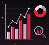

Анализ данных
Аналитик данных помогает компании принимать решения на основе цифр. Он собирает и чистит данные, ищет ответы на вопросы бизнеса — почему упали продажи, какие товары покупают вместе, — и показывает результат в отчётах и графиках.
Что делают аналитики данных
Отчёты и дашборды
Графики продаж, посещаемости и других показателей бизнеса.
A/B-тесты
Проверка, какой вариант сайта или кнопки работает лучше.
Исследования пользователей
Как люди пользуются продуктом и почему уходят.
Прогнозы
Сколько товара закупить и какой будет выручка в следующем месяце.
Языки и инструменты
Начни с SQL и Excel — их чаще всего просят в вакансиях аналитиков, а потом переходи к Python. Нажми на ячейку, чтобы узнать подробности.
Что дальше